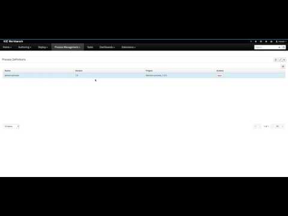

Control business rules execution from your processes
Business processes benefit a lot from business rules, actually they are like must to have in today’s constantly changing world. jBPM comes with excellent integration with Drools so that already has a lot of advantages to provide multiple levels of business rules integration:
- BPMN2 Business Rule task
- Conditional events (start, intermediate and boundary)
- Sequence flow conditions
Default integration with rules is that process engine shares the same working memory with rules engine. That in many cases is desired but the main limitations is life cycle of rules and processes are tightly coupled – they are part of the same project (aka kjar) or in other words knowledge base.
This in turn makes it harder to decouple it and manage life cycle of business rules independently. There are domains out there that have much higher frequency of change in the rules rather than in processes so this tight integration makes it hard to easily upgrade rules without affecting processes – keep in mind that processes are usually long running and can’t be easily migrated to next version just because of rule changes.
To resolve this, alternative way of dealing with business rules from within process has been introduced. It does support only business rule tasks and not conditional events or sequence flow conditions.
What’s in the toolbox?
This new feature introduces two new components that serve different use cases:
- Business Rule Task based on work item handler
- Remote Business Rule Task based on work item handler and Kie Server Client
Both of them support two types of rule evaluation:
- DRL
- DMN
Let’s look at them in details, starting first with Business Rule Task handler.
Business Rule Task handler
Main use case for this alternative business rule task is to decouple process knowledge base from rule knowledge base. That means we will have two projects – kjars to be responsible for handling these two business assets. Rule project is solely responsible for defining business rules which can then be updated at any time without affecting processes.
Next process project (kjar) does focus only on business processes and hand rule evaluation to the rule project. The only common place is that Business Rule Task handler that defines what kjar (rule project) should be used within process project.
Since the alternative business rule task is based on work item node, it requires work item handler to be registered in process project. As usual work item is registered in deployment descriptor (accessible via project editor)
Business Rule Task handler is implemented by org.jbpm.process.workitem.bpmn2.BusinessRuleTaskHandler and it expects following arguments:
- groupId – mandatory argument referring to rule’s project groupId
- artefactId – mandatory argument referring to rule’s project artefactId
- version – mandatory argument referring to rule’s project version
- scanner interval – optional used to schedule periodic scans for rules updates – in milliseconds
Business Rule Task handler supports two types of rule evaluation:
- DRL – that allows to specify following data input on task level to control its execution
- Language – set to DRL
- KieSessionName – name of the kie session as defined in kmodule.xml of rule project – can be left empty which means default kie session is used
- KieSessionType – stateless or stateful – stateless is default if not given
- all other data inputs will be inserted into working memory as facts thus will be available for rule evaluation. Note that data input and output should be matched by name to properly retrieve updated facts and put back into process variables
- DMN – that allows to specify following as data input on task level:
- Language – set to DMN
- Namespace – DMN namespace to be used
- Model – model to be used
- Decision – optional decision name to be used
- all other data inputs are added to DMN context for evaluation. All results from DMNResult are available as data outputs referred by name as defined in DMN
NOTE: Since projects are decoupled they need to have common data model that both will operate on. Currently that model must be on parent class loader instead of kjar level due to classes being loaded by different class loaders and thus making rules not match them properly. In case of execution server (KIE Server) model jar must be added to WEB-INF/lib of the KIE Server app and added to both projects as dependency in provided scope.
Remote Business Rule Task handler
Remote flavour of the handler comes with KIE Server Client and aims at providing even more decoupling as it will communicate with external decision service (KIE Server) to evaluate rules. This provide more flexibility and removes the limitation of common data model to be present on the application level. With remote business rule task users can simply define model project as project dependency (with default scope) for both projects – rules and processes. Since there is marshalling involved there is no problem with class loaders and thus working as expected.
From project authoring point of view there is only one difference – Business Rule Task requires additional data input – ContainerId that defines which container on execution server it should target. Obviously this can be container alias as well for more flexibility.
Similar as Business Rule Task, this handler supports both DRL and DMN. Depending on which type is needed it supports different data inputs:
- DRL
- Language – DRL
- ContainerId – container id or alias of the container to be used to evaluate rules
- KieSessionName – name of the kie session on execution server for given container
- DMN
- Language – DMN
- ContainerId – container id or alias of the container to be used to evaluate rules
- Namespace – DMN namespace to be used
- Model – model to be used
- Decision – optional decision name to be used
Any other data input will be send as data to the execution server. Results handling is exactly the same as with Business Rule Task handler.
Remote Business Task Handler is implemented by org.kie.server.client.integration.RemoteBusinessRuleTaskHandler. Handler expects following arguments:
- serverUrl – location of the execution server that this handler should use, it can be comma separated list of URLs that will be used by load balancer
- username – user to be used to authenticate calls to execution server
- password – password to be used to authenticate calls to execution server
- classLoader – projects class loader to gain access to custom types
Registration of the handler is done exactly the same, via deployment descriptor.
That would conclude the description of new capabilities. If you’d like to try it yourself simply clone this repository to your workbench, build and run it!
Here you can see this being done…

That’s all for now, though stay tuned as more will come :)

{kind=link}
{kind=link}
{kind=link}
{kind=link}
{kind=link}